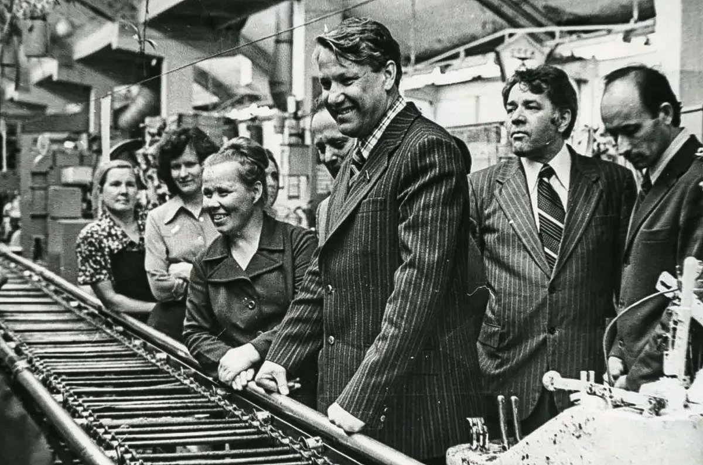
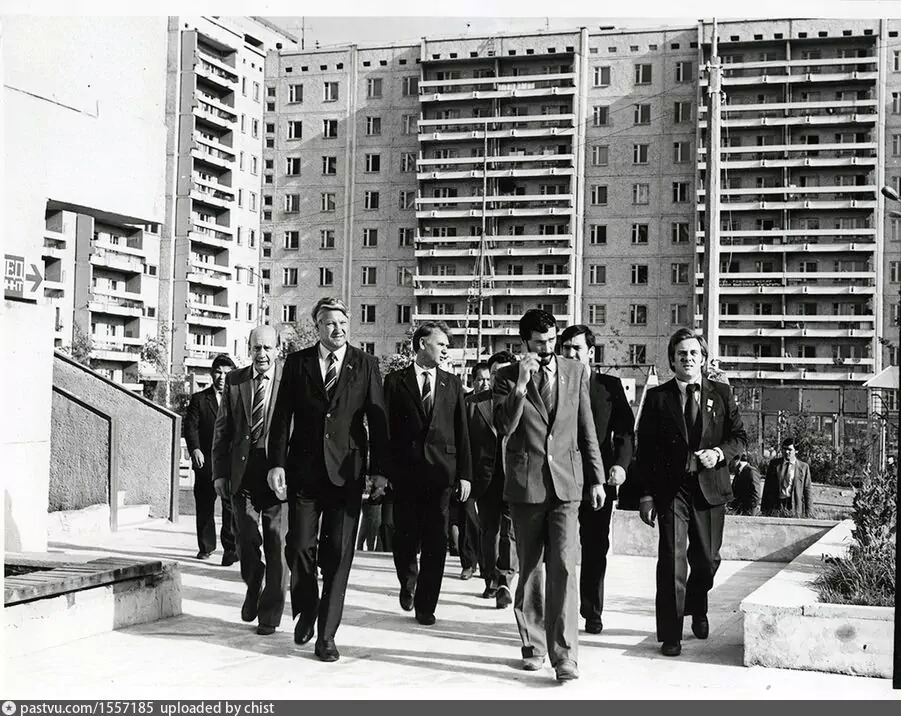

Благодаря своим достижениям и лидерским качествам Ельцин привлёк к себе внимание партийных органов. В 1961 году он стал членом КПСС, а спустя пару лет — признанным членом партии. Избранным делегатом он принимал участие в городских, районных и областных конференциях КПСС. Благодаря своей активности молодой партиец в 1968 году получил работу в Свердловском обкоме КПСС. Здесь его политкарьера начала развиваться ещё стремительнее. 
Будучи начальником отдела строительства, Борис Николаевич внёс много положительных перемен: стремительно развивалась сельскохозяйственная сфера, активно велось строительство новых жилищных комплексов и промышленных сооружений, существенно улучшились поставки продовольствия.
В 1975 году Ельцин руководил промышленным развитием Свердловской области. Через год он получил должность руководителя Свердловского региона и занимал эту должность в течение девяти лет.
Край, возглавляемый Ельциным, стал передовым по многим показателям — росли темпы и масштабы строительства, реконструировалась индустрия, создавалась новая инфраструктура. Чего стоит только строительство Балтымского культурно-спортивного комплекса, спроектированного Борисом Николаевичем. Это здание было уникальным во всём СССР.
Его же инициативой было строительство метро в Свердловске, были построены трасса Екатеринбург — Серов и новое 20-этажное здание обкома КПСС. Ельцина также волновали проблемы народа в сёлах, поэтому сельскохозяйственная сфера поддерживалась на стабильном уровне. 
Ельцин ценил человеческий фактор в работе с людьми — сотрудниками, общественниками, горожанами. Но требовал дисциплины и проявлял жёсткость, был требовательным. Он всегда был внутренне собран, сосредоточен на главном. Уважение сограждан на Урале Ельцин заслужил своим особенным, «ельцинским» стилем, открытостью в общении и умением управлять большим количеством людей.
Также 25 февраля 1981 года состоялся 26-ый съезд КПСС, очень важный для карьеры Ельцина.
В 1985 году Ельцин переехал в Москву и возглавил отдел строительства в ЦК КПСС. В 1987-м он имел смелость раскритиковать деятельность и власть Михаила Горбачёва, за что лишился некоторых полномочий, стал заместителем главы Госстроя.
Нарастающее недовольство властью на тот момент было и у общества. Это сыграло на руку молодому и бойкому партийцу. В 1989 году Ельцин стал народным депутатом, а затем — председателем Верховного Совета РСФСР. В период развала Союза Борис Николаевич и его соратники приобрели авторитет, смогли предотвратить настоящую войну.